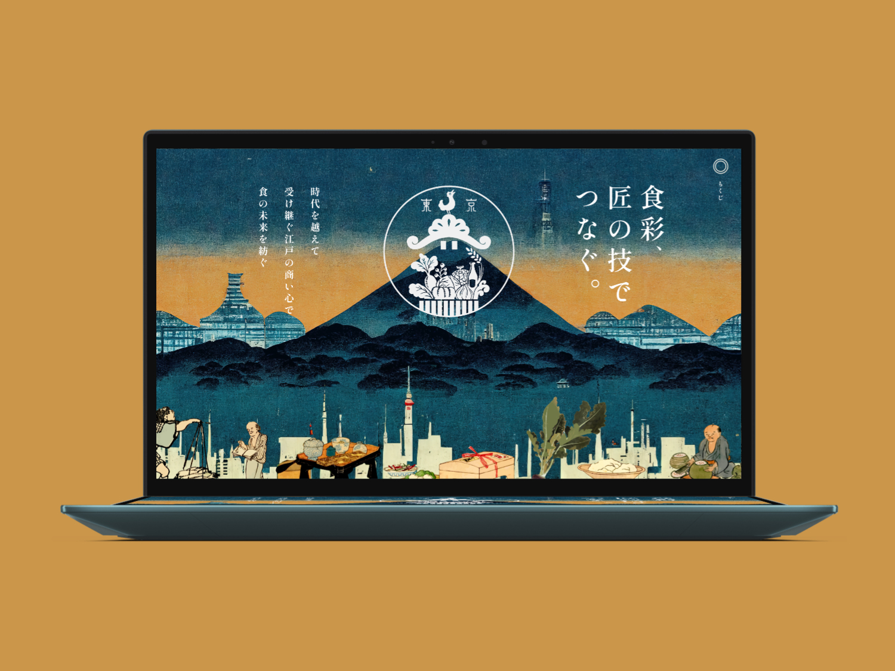
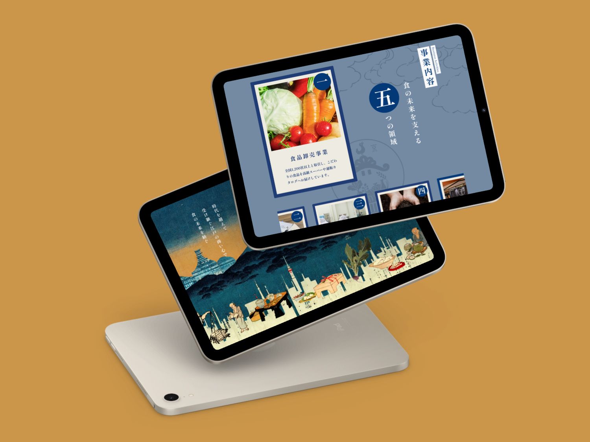
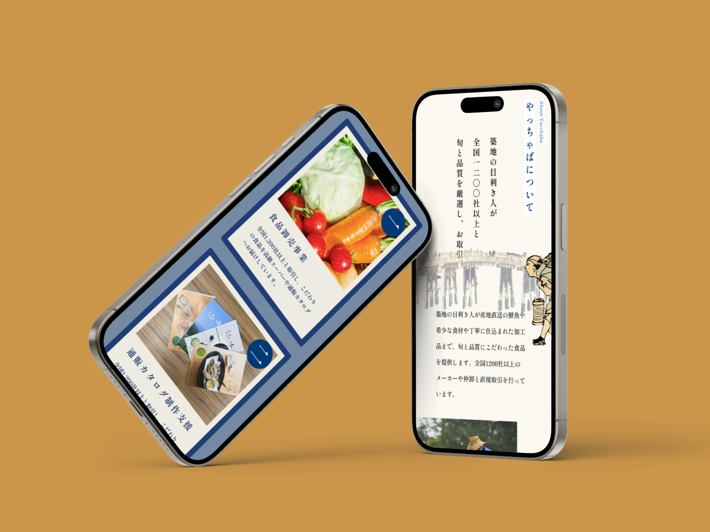
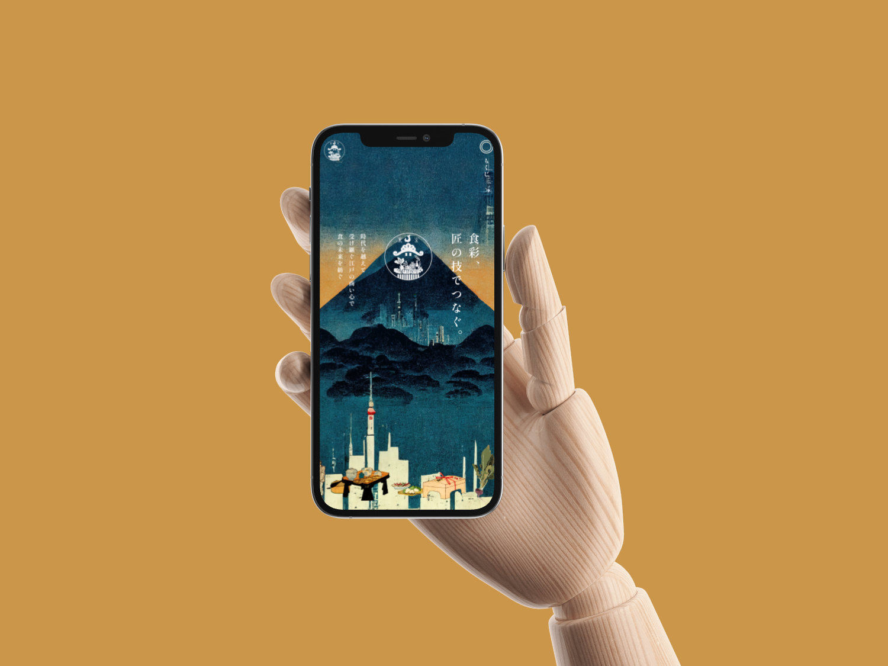

株式会社やっちゃば
コーポレートサイト
制作概要
全国の生産者や食品メーカーと販売チャネルを結ぶ食の総合商社「株式会社やっちゃば」のコーポレートサイトデザイン。
"食彩、匠の技でつなぐ。"というブランドメッセージのもと、江戸の商い文化と現代のビジネスを融合させた和のテイストで、企業の歴史と信頼感を視覚的に表現しました。
- 課題
-
- ・企業の理念や歴史が十分に伝わるビジュアルが不足していた
- ・事業の多角性（卸売・マルシェ・飲食など）を一目で理解できる構成が必要
- ・"食"に携わる企業としての信頼感と温かみの両立が求められた
- ターゲット
-
- ・取引先となる食品メーカー・流通業者
- ・マルシェや飲食事業に興味を持つ一般消費者
- ・企業の理念や姿勢に共感する求職者
- 目的
-
- ・江戸の商い文化を受け継ぐ企業としてのブランドイメージを確立する
- ・多岐にわたる事業内容をわかりやすく整理し、信頼性を高める
- ・"食"を通じた人と人とのつながりを、ビジュアルで体感できるサイトにする
- デザイン
-
- ビジュアルコンセプト：浮世絵風のイラストレーションと現代のタイポグラフィを組み合わせ、"伝統と革新"を表現。メインビジュアルでは富士山や江戸の風景を背景に、食材や商いの情景を描き出した。
- カラー：深い藍色と夕焼けのような暖色を基調にし、格式と温かみを両立。食材の彩りが映える配色に設計。
- フォント：縦書きの日本語フォントを効果的に使用し、和の世界観を徹底。見出しには力強さを、本文には読みやすさを持たせた。
- 情報設計
-
トップでは"食彩、匠の技でつなぐ。"のキャッチコピーで企業姿勢を印象づけ、事業紹介→企業理念→沿革→採用情報と、訪問者の関心に沿った自然な導線を構築。
事業の多角性を伝えつつも、情報過多にならないよう各セクションをシンプルにまとめ、視覚的なリズムを意識しました。 - 担当範囲・ツール
-
- 担当：デザインのみ
- 使用ツール：Figma / Illustrator


学び
実務として初めてコーポレートサイトのデザインに携わったことで、ブランドの世界観を視覚的に伝える力がより深まった。 "和"のテイストという明確なコンセプトに沿いながらも、現代のWebデザインとしての見やすさ・使いやすさを両立させることの難しさと面白さを実感。 クライアントの要望をヒアリングし、言葉にされていないニュアンスまで汲み取ってデザインに落とし込む経験は、大きな学びとなった。

プレビュー